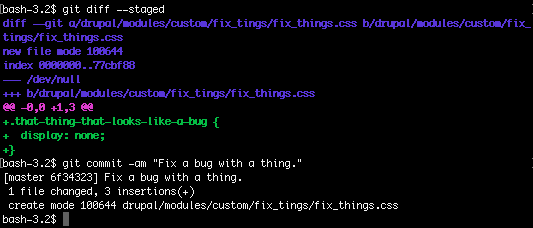
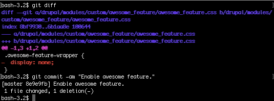

# About me
- Work at Ny Media (Trondheim, Norway)
- eiriksm on [drupal.org](https://www.drupal.org/u/eiriksm) / [github](https://github.com/eiriksm/)
- [@orkj at twitter](https://twitter.com/orkj)
- Beer nerd
- Fan of the image format GIF
## Prolific author of the wildly popular paradigm "display:none-driven-development"


# Object oriented programming
> Object-oriented programming (OOP) is a programming paradigm based on the concept of "objects" (...)
Wikipedia
## What we will cover
- Very briefly: What is OOP in PHP?
- Why are we doing that in Drupal 8 now?
- Is it even better, though? Examples?
## Let's look at some examples of what OOP in PHP means.
<?php
function print_hello_world() {
print "Hello world!";
}
print_hello_world(); // Prints "Hello world!"
<?php
namespace Long\String\With\Backslashes;
class HelloWorldPrinterFactory implements HelloWorldPrinterFactoryInterface {
public function getHelloWorldPrinter() {
return new HelloWorldPrinter();
}
}
class HelloWorldPrinter implements PrinterInterface {
protected $hello = 'Hello';
protected $world = 'world!';
public function printHelloWorld(Another\String\With\Backslashes\PrintThings $thingPrinter) {
return $thingPrinter->printThing($this->getHello() . ' ' . $this->getWorld());
}
private function getHello() {
return $this->hello;
}
private function getWorld() {
return $this->world;
}
}
new HelloWorldPrinterFactory()
->getHelloWorldPrinter()
->printHelloWorld(new Another\String\With\Backslashes\PrintThings()); // Prints "Hello world!"
# At first sight.
## That looks horrible.
mymodule.module
<?php
function mymodule_block_info() {
return array(
'my_block' => array(
'info' => t('My block'),
),
);
}
function mymodule_block_view($delta = '') {
$block = array();
switch ($delta) {
case 'my_block':
$block['subject'] = t('My block');
$block['content'] = t('This is some content.');
break;
}
return $block;
}
src/Plugin/Block/MyBlock.php
<?php
namespace Drupal\mymodule\Plugin\Block;
use Drupal\Core\Block\BlockBase;
/**
* @Block(
* id = "my_block",
* admin_label = @Translation("My block"),
* )
*/
class MyBlock extends BlockBase {
/**
* {@inheritdoc}
*/
public function build() {
return array(
'#markup' => $this->t('This is some content.'),
);
}
}
# At first sight.
## That also looks horrible.
### Some statements I read (citations omitted on purpose)
- (...) well established as a best practice
- Faster development thanks to re-use
- Encapsulation
- Easier to test
- Better, because... Dependency injection?
- Fewer bugs because... Objects?
## First statement
Well established as a best practice
### Which one of these is not from Drupal core, but from a Java program
- ExecutionContextFactory
- ReflectionFactory
- MemoryBackendFactory
- ServiceFactory
### Which one of these is not from Drupal core, but from a Java program
- ~~ExecutionContextFactory~~
- ~~ReflectionFactory~~
- ~~MemoryBackendFactory~~
- ServiceFactory
# Sorry. First statement
## Faster development thanks to re-use
<?php
class Adder {
public function addNumbers($a, $b) {
return $a + $b;
}
}
$a = new Adder();
assert($a->addNumbers(1, 2) === 3);
# Look at code, Eirik
# Depedency injection
# Look at code, Eirik
# Fewer bugs because... Objects?
<?php
public function handleSomeThing(NodeInterface $node) {
$node->getType(); // Always exists!
}
# Look at code, Eirik
# Trying to sum it up.
## Summary
- Might look (one or more of) the following things: scary, hard, ugly and like a lot of work.
- May or may not be your taste.
- Might give you some benefits.
- Benefits are more obvious when using an IDE.